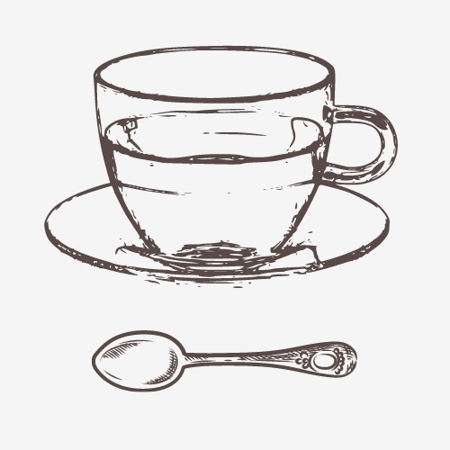
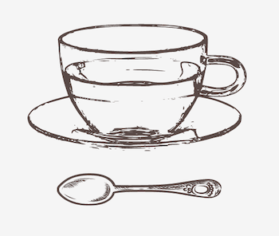
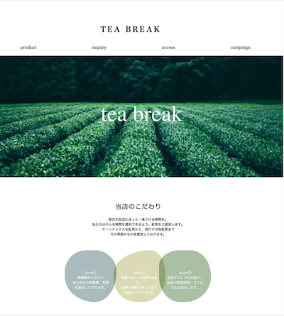
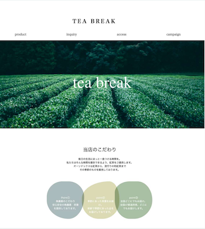
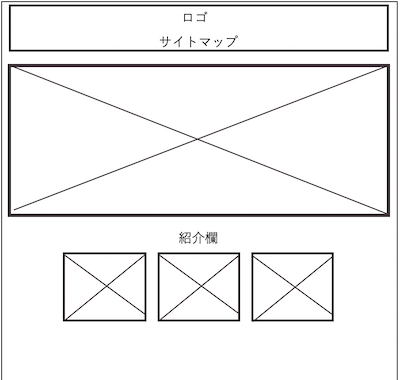
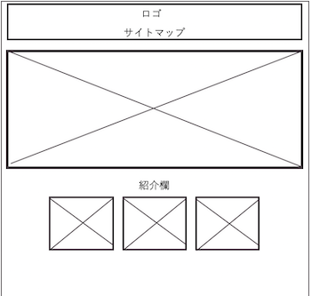
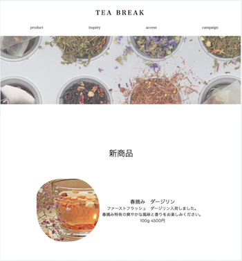
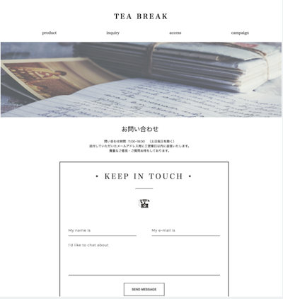

progress


-
STEP1
依頼主がいると仮定して企画書・ワイヤーフレームの作成しました。 -
STEP2
作成したワイヤーフレームをもとにコーディングを行いました。 -
STEP3
JavaScriptで動きをつけ、PHPを使ってフォームの確認ページを制作しました。
design






commitment
○ターゲット
20代から50代女性
○制作したきっかけ紅茶の魅力を伝えられるサイトを制作したいと考え制作しました。
○配色
○心がけたこと
| #A9BFA4 | #DADAB4 | #ABBABA |
商店街の課題である若年層の課題を解決するために、催しの写真を大きく表示しました。
配色やフォントはどんな世代にも親しみを持ってもらえるような暖かい配色にしました。
technology
MicrosoftOffice PowerPoint
企画書の作成・ワイヤーフレームの作成に使用しました。
Adobe XD
デザイン案の作成に使用しました。
HTML・CSS
デザイン案に沿って、コーディングを行いました。
JavaScript
クリックした際の画像の拡大や画面のスクロールに合わせてコンテンツが動く機能を実装しました。Cookieの取得と受け渡しが今後の課題です。
PHP
phpではフォームの確認機能を実装しました。今後もデータベースを使って商品一覧の呼び出しや支払い機能などを実装していきたいです。